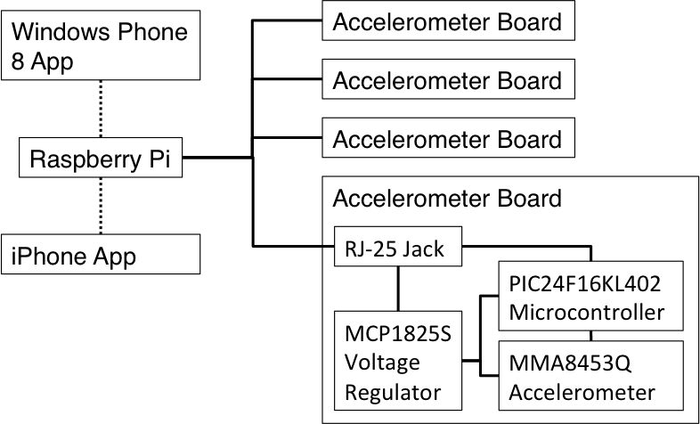

I just received a shiny, brand-new Raspberry Pi in the mail today! I've only been playing around with it for an hour or so but I already love this little device! It only took me about 30 minutes to go from unwrapping to running, which is very impressive for what is essentially an embedded development board. I remember back in college how it took me a week to get ucLinux up and running on a Freescale Coldfire 5271. My how times have changed. The power of this device is amazing. I'm even writing part of this post on it! Below is a pic of the new device up and running.
I didn't just buy the board to play with though; I have an idea for a project. My wife recently discovered an iPhone app that tracks sleep quality using the accelerometer in the phone. The app is pretty slick, but it suffers from a fatal weakness: it can only track the movements of a single person since there is only one sensor. To track the sleep quality of two people in the same bed requires an array of sensors to determine where movement originated, something a smartphone can't do. Enter the Raspberry Pi. I'm going to use it as a controller for some custom sensor boards I'm going to make. It will be running a server on it that a custom iPhone and Windows Phone 8 app I'm going to write will connect to. This way, I still get the easy to access smart phone interface, but with the necessary sensor network. The end result of what I'm analyzing may not be all that interesting, but the tech behind it will be a lot of fun to play with.
Below is a draft block diagram of the system:

Most of the data processing will happen on the Raspberry Pi. It's going to have the main signal processing algorithms, database storage, server interface for the apps, etc. The accelerometer boards are going to be custom made with the following components below. I could buy some pre-made accelerometer dev kits, but that's no fun :). The mobile apps are basically going to serve as a remote interface to start the system, stop it, and visualize data from the server. It will be a healthy mix of dev work I've done before and learning new things. Ironically enough, the embedded work will be the old, and the mobile apps will be the new, despite the fact that I work for a mobile company. Fun times ahead!